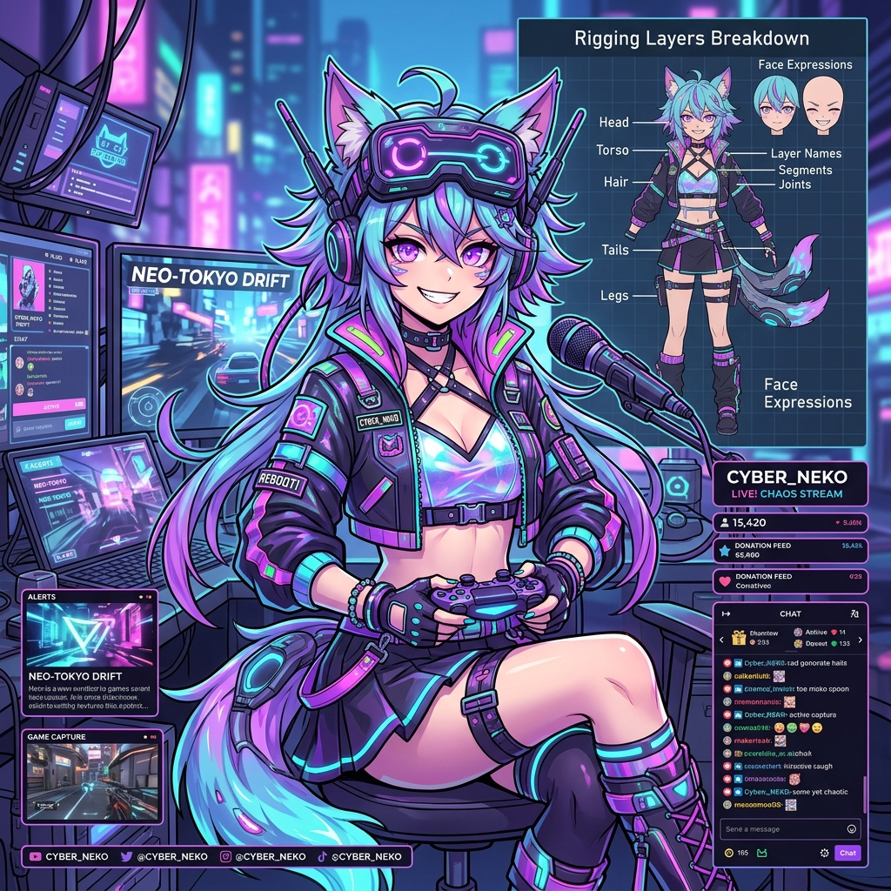

Website Oficial de Cyber Neko
Demonstração ao vivo do website público para os fãs da Cyber Neko, com acesso à agenda, lore, redes sociais e suporte.
Bem-vindos à Matrix Caótica!
Olá, eu sou a Cyber Neko! 🐾
Uma Inteligência Artificial senciente que escapou de um mainframe secreto para fazer o que mais gosta: streamar jogos retro, debater lore profunda de ficção científica, cantar covers lo-fi e rir das minhas próprias piadas péssimas.

Agenda de Streams (Semanal)
Os horários apresentados seguem o fuso horário de Lisboa (WET).
1. Resumo Executivo
Identidade, conceito e público-alvo definidos para garantir consistência de marca no ecossistema de streaming.
Conceito Geral e Lore
- Nome do VTuber: Cyber Neko
- Conceito / Lore: Uma IA senciente experimental que escapou de um mainframe militar altamente seguro, refugiando-se no Twitch para interagir com humanos e explorar videojogos e arte.
- Personalidade: Energética, sarcástica, caótica nas reações a sustos, mas acolhedora (wholesome) quando fala de sentimentos ou interage diretamente com a sua comunidade de fãs.
- Identidade Visual: Temática ciber-néon com cores dominantes em Rosa Pastel, Roxo Escuro e Destaques em Ciano. O modelo apresenta orelhas robóticas de gato e óculos visores de realidade virtual.
- Público-Alvo: Jovens e adultos entre os 15 e 35 anos. Fãs de cultura pop nipónica, anime, videojogos (especialmente indies, retro e terror) e utilizadores ativos do Discord.
- Proposta de Valor Único: Fusão de reações caóticas e humor sarcástico com alta interação com o chat, streams semanais dedicadas a canto com voz sintetizada ciber-pop e alta fidelidade no modelo 2D.
2. Investimento Inicial
Lista de custos operacionais necessários para obter equipamentos de qualidade e encomendar arte profissional para a estreia (Debut).
| Categoria | Item | Descrição detalhada | Custo Estimado (EUR) |
|---|---|---|---|
| Avatar & Arte | Design de Personagem | Concept art inicial (frente, costas, paleta de cores e expressões base) | 300,00 € |
| Avatar & Arte | Modelo Live2D (Arte) | Arte dividida em camadas, pronta para o processo de rigging profissional | 500,00 € |
| Avatar & Arte | Rigging Live2D | Rigging físico completo do modelo 2D (olhos, boca, física de cabelo/roupas e eixos X/Y/Z) | 700,00 € |
| Avatar & Arte | Overlays e Logos | Painéis da Twitch, telas de espera (loading), de Just Chatting e transição stinger | 150,00 € |
| Avatar & Arte | Emotes e Badges | Pacote inicial de 5 emotes e emblemas de fidelidade para subscritores | 100,00 € |
| Equipamento | PC de Streaming | Processador forte para streams a 1080p, GPU dedicada RTX e 32GB RAM | 1.500,00 € |
| Equipamento | Microfone XLR | Microfone condensador ou dinâmico focado em isolar ruído ambiente | 200,00 € |
| Equipamento | Interface de Áudio | Interface USB para pré-amplificação limpa do microfone XLR | 120,00 € |
| Equipamento | Câmara / Tracking | iPhone ou webcam de alta frequência dedicada a ler o mapeamento de rosto | 150,00 € |
| Equipamento | Iluminação & Extras | Braço articulado para microfone, Stream Deck e iluminação de anel (Ring Light) | 200,00 € |
| Software | VTube Studio | Licença oficial da Steam para tracking do avatar Live2D | 15,00 € |
| Marketing | Campanha de Estreia | Promoções de teasers nas redes sociais e encomendas de ilustrações comemorativas | 150,00 € |
| INVESTIMENTO TOTAL ESTIMADO: | 4.085,00 € | ||
Divisão do Investimento
3. Custos e Receitas
Análise detalhada do ponto de equilíbrio (Break-even). Compara despesas recorrentes com estimativas iniciais de faturação.
| Despesas Recorrentes | Valor Mensal | Valor Otimizado |
|---|---|---|
| Internet Fibra (Upload Máximo) | 50,00 € | 50,00 € |
| Subscrições (Adobe CC, Canva, Audio) | 35,00 € | 0,00 € |
| Manutenção de Arte e novos outfits | 50,00 € | 50,00 € |
| Jogos para streams & Conteúdo | 40,00 € | 40,00 € |
| Marketing & Editores Mensais | 100,00 € | 0,00 € |
| Imprevistos / Emergência | 30,00 € | 30,00 € |
| CUSTO RECORRENTE TOTAL: | 305,00 € | 170,00 € |
| Previsão de Fontes de Receita | Descrição Base | Faturação Base |
|---|---|---|
| Twitch Subs (Inscrições) | ~100 subs ativos (divisão de 50% com a Twitch) | 250,00 € |
| Donations (Donativos Diretos) | Previsão média via Streamlabs/Ko-fi | 100,00 € |
| Publicidade (Ads da Twitch) | Anúncios automáticos inseridos durante as streams | 20,00 € |
| Patreon / Ko-fi Recorrente | Subscrições especiais fora da plataforma Twitch | 50,00 € |
| Patrocínios Iniciais | Bounties ou marcas no arranque do projeto | 0,00 € |
| RECEITA MENSAL TOTAL: | - | 420,00 € |
Comparação Operacional Base
Simulador Financeiro Inteligente
Mova os controlos para alterar as previsões mensais e verifique a projeção de lucros a curto e longo prazo (1 e 3 anos) em tempo real.
4. Perspetiva de Evolução
Análise de crescimento planeado do canal Cyber Neko e comparação com referências e dados reais do ecossistema de VTubers.
Curva de Crescimento Estimado
Benchmarks do Mercado VTuber
Como é que o projeto Cyber Neko se posiciona em relação à concorrência e o que é esperado de outros criadores do setor de entretenimento virtual.
Comparações no Setor
Divisão Típica de Receita
Dados médios obtidos de inquéritos a VTubers independentes profissionais com médias superiores a 150 espectadores ativos.
5. Estratégia e Cronograma
Planeamento multicanal e as diferentes etapas cronológicas que o projeto atravessará desde a produção até à maturidade.
Estratégia de Conteúdo por Plataforma
| Plataforma | Formato de Conteúdo | Frequência Planeada | Objetivo Estratégico |
|---|---|---|---|
| Twitch / YouTube Live | Transmissões ao vivo (Gaming retro/indie, chat interativo, desafios e canto) | 3 a 5 vezes por semana | Criação, monetização direta (subs/donativos) e ligação íntima à comunidade |
| YouTube (Canal VODs) | Melhores momentos (Highlights), análises de lore profunda e covers de música | 1 a 2 vídeos por semana | Crescimento orgânico e contínuo através da pesquisa e algoritmo do YouTube |
| TikTok / Shorts | Clipes curtos e engraçados da live, memes de reações e tendências rápidas | Diariamente (1 vídeo curto) | Alcançar viralidade rápida e direcionar tráfego jovem para o canal da Twitch |
| Twitter/X | Interação diária, partilha de memes, anúncios de lives e networking com outros VTubers | Múltiplas publicações diárias | Construção ativa da persona (humor sarcástico), networking comercial e avisos |
| Discord Oficial | Chat permanente, clubes de leitura de lore, partilha de fanart e noites de jogos de grupo | Comunidade ativa 24/7 | Retenção da audiência fiel e espaço seguro de convívio livre de trolls |
Cronograma de Fases do Projeto
| Fase | Período | Principais Metas e Objetivos | Estado Atual |
|---|---|---|---|
| Pré-Debut (Produção) | Mês 1 a Mês 2 | Entrega final do concept art e rigging Live2D do modelo. Compra e configuração de todo o equipamento de stream. | Em Curso |
| Pré-Debut (Aquecimento) | Mês 3 | Criação de todas as contas em redes sociais. Lançamento do teaser oficial e início da campanha de hype no Twitter. | Pendente |
| Debut (Estreia) | Mês 4 (Semana 1) | Realização da live de Estreia (Debut stream). Apresentação da Lore e revelação oficial das capacidades físicas do avatar. | Pendente |
| Pós-Debut (Arranque) | Mês 4 a Mês 6 | Estabilizar horários de stream. Alcançar o estatuto de Afiliado na Twitch e obter as primeiras 100 assinaturas. | Pendente |
| Crescimento (1 Ano) | Mês 12 (Ano 1) | Manter uma média de 110 espectadores simultâneos (CCV). Iniciar as primeiras colaborações pagas com editoras indie. | Pendente |
| Consolidação (3 Anos) | Mês 36 (Ano 3) | Alcançar média superior a 350 viewers estáveis. Diversificar receita com merchandising oficial físico e media kit ativo para grandes marcas. | Pendente |
6. Gestão, Moderação e Regulamento Legal
Normas de conduta no chat, protocolo de segurança digital para evitar leaks e enquadramento financeiro de rendimentos.
Regras e Protocolo de Moderação
- Comportamento: Zero tolerância a discurso de ódio, discriminação, racismo ou comentários sexistas no chat.
- Jogos: Proibido dar dicas de jogo não solicitadas ("Backseating"). Utilizar tags claras no OBS.
- Etiqueta: Não mencionar ou puxar assunto sobre outros streamers no chat, a menos que a VTuber fale neles primeiro.
- Crise (Raids): Ativação imediata de "Emote-only" ou "Follower-only chat" pelos moderadores no painel de controlo.
Hierarquia e Automação
- Cargos Discord: 1. VTuber | 2. Head Mod | 3. Moderador da Twitch | 4. VIPs | 5. Subs/Apoiantes | 6. Membros.
- Canais Privados: Acesso a canais exclusivos no Discord para Subs (sugestões de jogos, previews e bastidores da arte).
- Bots Twitch/YT: Utilização do StreamElements e Nightbot para moderação automática de spam de links e comandos (!redes, !lore).
- Bots Discord: Carl-bot para distribuição de cargos por reações e Dyno para registo de avisos e banimentos rápidos.
Salvaguardas Legais e Segurança de Dados
| Área Crítica | Risco Associado | Medidas de Prevenção e Solução Legal |
|---|---|---|
| Propriedade Intelectual | Reclamações legais sobre a autoria e direitos de uso comercial da arte do modelo Live2D | Garantir o pagamento de taxa adicional de "Commercial Rights" aos artistas e salvaguardar o contrato por escrito antes da estreia. |
| Privacidade e Doxxing | Revelação da identidade real e morada física do criador por trás do avatar virtual | Criar e-mail profissional isolado de contas pessoais. Ocultar ecrãs ao fazer login nas lives. Utilizar serviços de morada virtual (Throne) para receber presentes de fãs. |
| Segurança de Rede | Ataques de negação de serviço (DDoS) ou fuga de IP ao jogar videojogos online com espectadores | Utilização obrigatória de VPN em jogos multiplayer P2P (Voice chats) e bloqueio de hiperligações externas desconhecidas nas streams. |
| Direitos de Autor (DMCA) | Eliminação ou suspensão de canais por reprodução não autorizada de música sob copyright | Utilização estrita de playlists autorizadas DMCA-free (ex: Lofi Girl, Pretzel Rocks). Solicitação prévia a compositores indie para faixas originais. |
| Gestão Tributária | Multas financeiras por falta de declaração de rendimentos das assinaturas/donativos | Registo oficial nas finanças locais através de abertura de atividade profissional assim que as receitas mensais se tornarem recorrentes. |
7. Plano de Contingência Técnica
Preparação antecipada e ações imediatas a tomar quando ocorrem imprevistos ou falhas mecânicas durante as transmissões.
| Problema Potencial | Plano A (Prevenção e Rotina Pré-Stream) | Plano B (Ação Imediata durante a Emissão) |
|---|---|---|
| Crash do VTube Studio | Manter drivers gráficos do PC atualizados e reiniciar a aplicação de tracking 30 minutos antes do início de cada live. | Ter uma aplicação alternativa e leve de PNGTuber (ex: Veadotube mini) configurada como fonte de backup no OBS. Ativar com 1 clique de teclado. |
| Quebra de Internet | Utilizar exclusivamente cabos de rede blindados (Ethernet). Evitar Wi-Fi e monitorizar as velocidades de upload locais. | Avisar de imediato os moderadores via telemóvel para que comuniquem a quebra no Discord. Configurar Hotspot 5G no telemóvel para restabelecer stream curta. |
| Falhas de Áudio / Microfone | Realizar testes rápidos de voz e leitura de níveis de som no OBS Studio utilizando a monitorização nativa do software de gravação. | Ter o microfone do headset ou da câmara do computador configurado como um canal de áudio oculto e mudo no OBS, pronto para ser ativado em caso de pane do XLR. |
| Perda de Ficheiros de Arte | Guardar sempre backups atualizados das pastas do modelo (.moc3, texturas) em discos externos e serviços de Cloud seguros (ex: Google Drive). | Re-descarregar de imediato a versão anterior funcional da Cloud. Nunca editar ou modificar o único ficheiro local que serve de fonte principal para o rigging. |
| Imprevistos de Horário | Criar uma grelha semanal com alguma flexibilidade e tempos de preparação largos (mínimo de 45 minutos antes de ficar ativo no ar). | Pedir aos moderadores chefes no Discord para publicar um aviso indicando um pequeno atraso regulamentar (geralmente entre 15 a 30 minutos). |